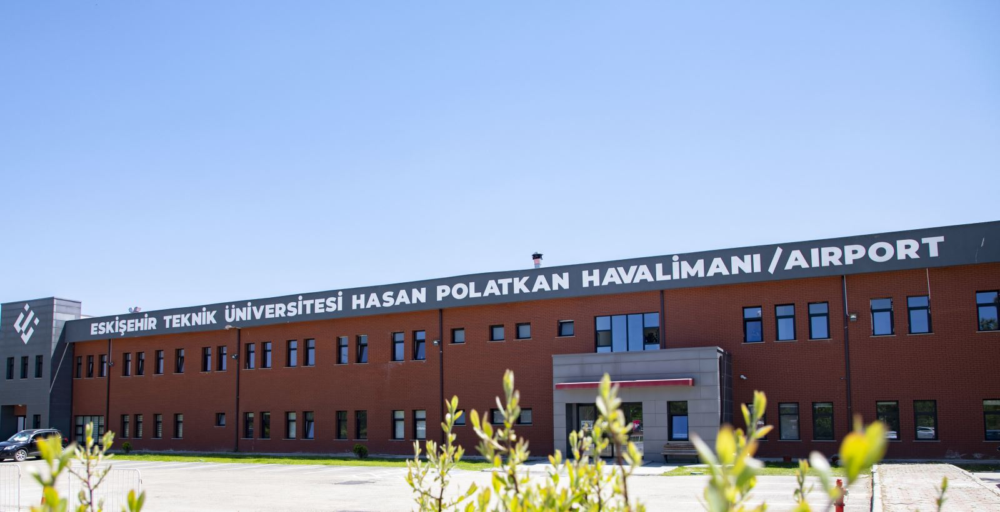

Eskişehir Teknik Üniversitesi
Eskişehir Teknik Üniversitesi
Airport The opening of Eskişehir Hasan Polatkan Airport to traffic dates back to the establishment of the Civil Aviation Vocational School (SHMYO), which forms the foundations of Eskişehir Technical University Faculty of Aeronautics and Space Sciences, in 1986. Opened to traffic under the name of "Eskişehir Anadolu Airport" in 1989, the main mission of the airport was to carry out the training activities of the Pilotage and Air Traffic Control Departments of SHMYO, thus providing air transportation services to the people of the region since those years has also become possible. Today, in addition to the intensive training flight activities at the airport, international flights are made to six destinations in Belgium, Germany, the Netherlands and France (Brussels, Ostent/Brugge, Lyon, Amsterdam, Düsseldorf and Cologne).
